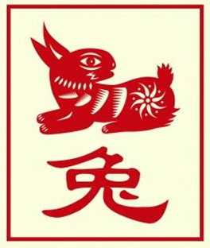

The Chinese Zodiac: Rabbit

- Fixed Season: Spring
- Fixed Direction: East
- Fixed Element: Wood/Yin
- Associated Sun Sign: Pisces
The person born under the sign of the Rabbit has a tendency to be very easygoing with others, offering kind advice when it is needed but never forcing their ideas onto others. While their nature is easy, however, it is certainly not disorderly. Rabbits are calmest when they know what they are doing, and even in the face of chaos a Rabbit can hold steady as long as they have a plan. As such, they often occupy positions in life where they are in charge of day to day operations, ensuring that projects go smoothly and plans go off without a hitch.
Rabbits are also people who have a strong inner compass guiding their emotions. If they feel happy then they are apt to believe that everything is going well in their life, rather than to question what is wrong. While when they feel sad they do not wait for it to pass, but act upon it in an attempt to right the perceived wrong. The only downside of which is that the Rabbit cannot just float pass certain thoughts or feelings, but will always stress and worry over exactly what they mean, when sometimes they are nothing more than the whims of a moment.